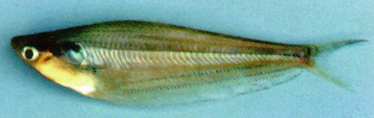

Systématique
- Ordre : Siluriformes
- Famille : Siluridae
- Genre : Kryptopterus
- Espèce : K. schilbeides
- Syn. : Hemisilurus schilbeides

Kryptopterus schilbeides est une espèce de silure asiatique décrite par Bleeker en 1858. Il appartient au groupe des silures "de verre", bien qu'il ne soit pas transparent comme K. vitreolus.
Il mesure adulte entre 10 et 12 cm. Son corps est très compressé latéralement, de couleur argentée à jaunâtre, souvent avec des reflets irisés. Il est morphologiquement très proche de Kryptopterus bicirrhis, avec lequel il est fréquemment confondu, mais il est généralement un peu plus petit et présente des différences subtiles au niveau de la forme de la tête et du nombre de rayons de la nageoire anale.
Comme la plupart des espèces du genre, la nageoire dorsale est réduite à un simple filament vestigial.
C'est un poisson grégaire et pélagique qui nage en pleine eau. Il doit impérativement être maintenu en groupe (minimum 6 à 8 individus) pour être à l'aise. Isolé, il devient stressé, craintif et refuse souvent de s'alimenter.
Il est relativement paisible, mais reste un prédateur opportuniste avec une bouche capable d'engloutir de petites proies. Il ne doit pas être cohabité avec des alevins ou de très petits rasboras. Il nage souvent en position oblique, ondulant face au courant.
Mode : ovipare.
Il n'existe aucune information disponible sur la reproduction réussie de cette espèce en aquarium. Dans la nature, la reproduction est probablement saisonnière et déclenchée par la montée des eaux lors de la mousson, les poissons migrant vers les zones inondées.
Dimorphisme sexuel : Aucune information précise n'est disponible pour différencier les sexes visuellement, bien que les femelles matures soient probablement plus rondes au niveau de l'abdomen.
Espérance de vie : Estimée entre 5 et 8 ans.
Il est largement réparti en Asie du Sud-Est, notamment dans les grandes îles de la Sonde (Sumatra, Bornéo, Java) ainsi que dans la péninsule malaise et le bassin du Mékong (Thaïlande, Vietnam).
Il fréquente les rivières de taille moyenne à grande, les zones inondées et parfois les eaux stagnantes, préférant souvent les eaux chargées en sédiments ou teintées par la matière organique.
Répartition

Origine naturelle :
- Asie du Sud-Est.
- Indonésie (Sumatra, Bornéo, Java).
- Malaisie.
- Thaïlande (Mékong, Chao Phraya).
- Vietnam.
Paramètres de maintenance
Température : 23 à 28 °C.
pH : 6,0 à 7,5.
GH : 5 à 15 °dGH.
Volume conseillé : Minimum 200 L. Bien que de taille moyenne, la nécessité de le maintenir en banc et son activité de nage requièrent un bac d'au moins 100 à 120 cm de façade.
Régime alimentaire
Régime : carnivore / insectivore.
Dans la nature, il se nourrit de petits poissons, de crustacés et d'insectes.
En aquarium, il apprécie les proies vivantes et congelées (vers de vase, artémias, krill) ainsi que les granulés pour poissons carnivores.